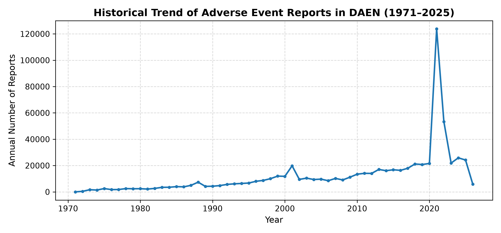
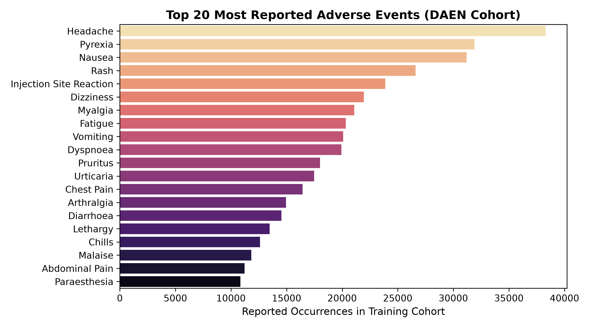
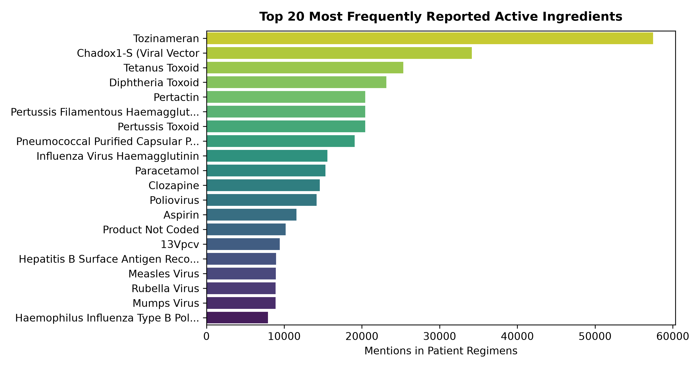
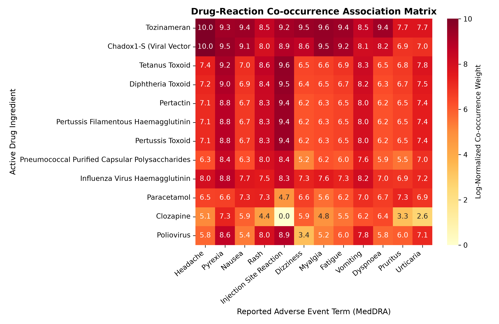
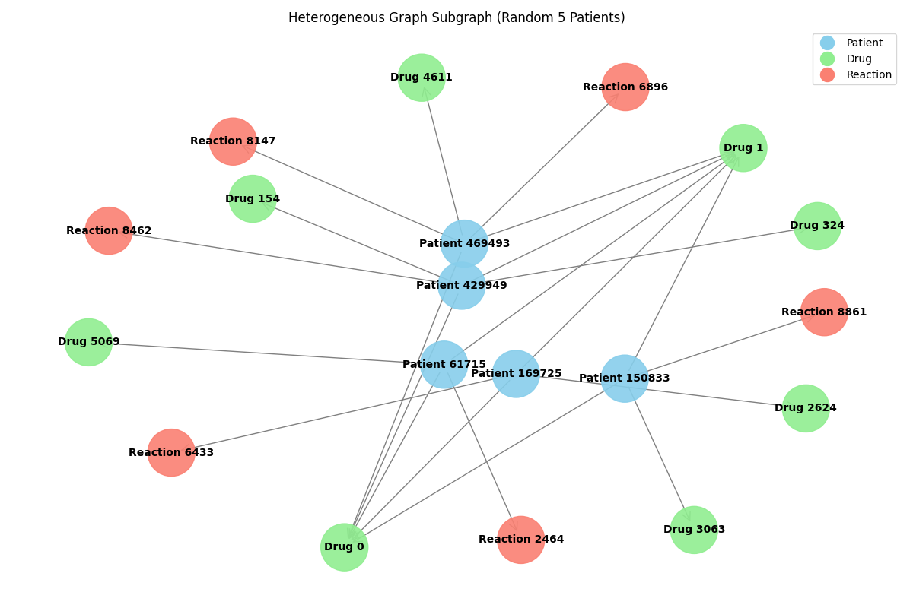
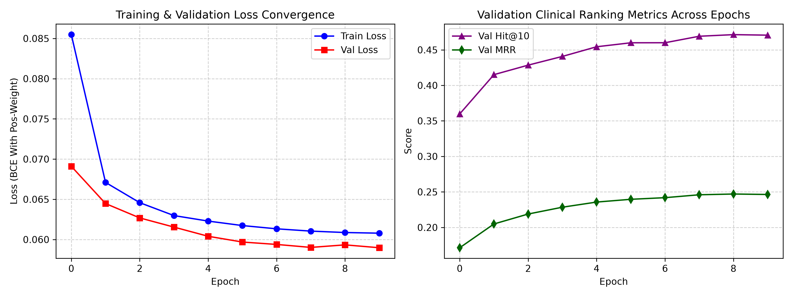
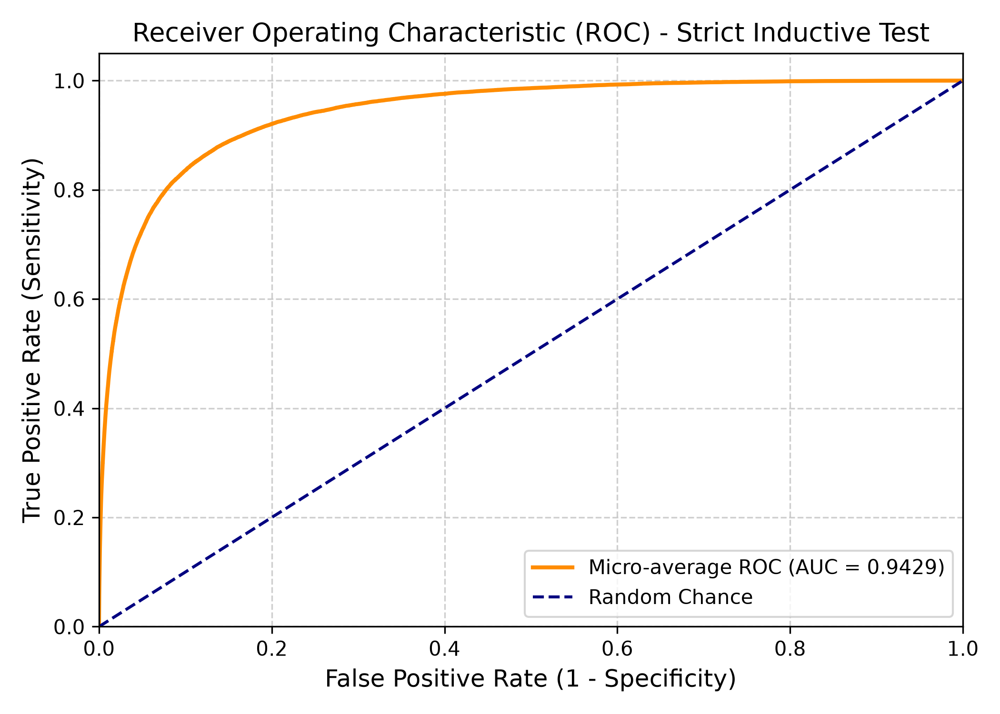
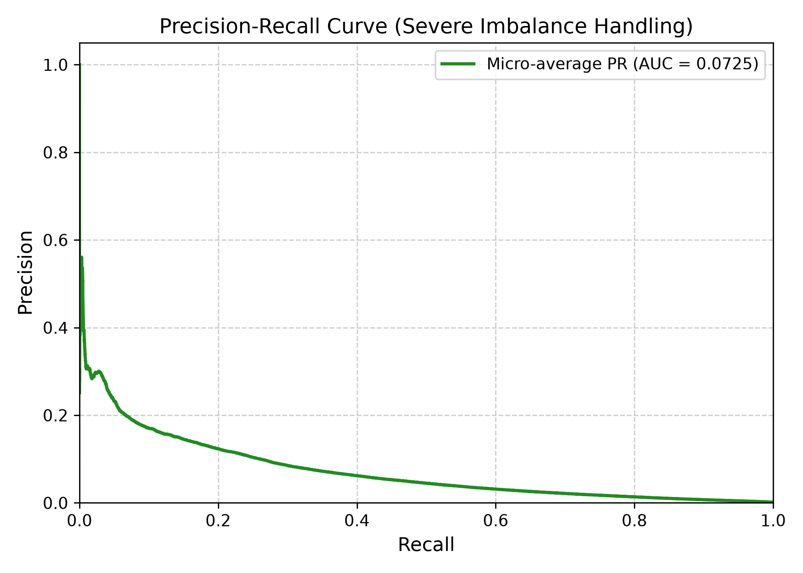

Pharmacovigilance is indispensable for detecting adverse drug reactions (ADRs) following regulatory market approval. Spontaneous reporting systems such as Australia’s Database of Adverse Event Notifications (DAEN) aggregate hundreds of thousands of post-marketing safety reports. However, predictive modeling on such repositories is notoriously hampered by extreme feature sparsity, unconfirmed causality, missing population denominators, and severe class imbalance. Earlier attempts to formulate this task within graph neural networks suffered from catastrophic target label leakage and demographic feature corruption. In this study, we present HeteroPharmacovigilanceNet, a strictly inductive Heterogeneous Information Network (HIN) framework that models adverse event prediction without target shortcuts. Operating directly on 679,562 DAEN reports (1971–2025), our pipeline extracts 2,623 standardized drug active ingredients and 1,824 clinically significant MedDRA reaction terms covering 96.07% of all recorded events. We construct a 482,877-edge historical Drug–Reaction Knowledge Graph from the training cohort and utilize graph attention convolutions to learn multi-hop pharmacological embeddings. A dedicated patient encoder combines standardized demographic factors (age, sex) with causality-weighted drug attention pooling (distinguishing suspected vs. concomitant medications) to score adverse reactions across the entire vocabulary. Evaluated on a strictly held-out test cohort of 99,947 patients, our model achieves a global Micro ROC-AUC of 0.9429, an MRR of 0.2552, and reaches Hit@10 of 46.61% and Hit@50 of 73.87% across all 1,824 candidate conditions. Validation on hallmark clinical agents (e.g., Pfizer Comirnaty COVID-19 vaccine, Clozapine, and Naproxen) demonstrates precise identification of drug-specific side effects (such as pyrexia, neutropenia, and myocarditis) while directly mitigating clinical alert fatigue. Finally, we provide an interactive deployment framework for a real-time Personal Drug Safety Assistant.
Pharmacovigilance is a cornerstone of modern clinical medicine and public health, serving as the essential surveillance mechanism for ensuring the ongoing safety of approved pharmaceuticals, biologicals, and vaccines. In Australia, the regulatory foundation for post-market safety signal detection is the Database of Adverse Event Notifications (DAEN), curated by the Therapeutic Goods Administration (TGA) [1, 2, 3]. Established in 1971, the DAEN repository currently archives more than 670,000 spontaneous reports submitted by healthcare practitioners, pharmaceutical manufacturers, and consumers [1].
While a substantial proportion of spontaneous notifications detail transient, mild, or predictable physiological reactions (e.g., localized injection site soreness, mild headache), an important subset encompasses severe, life-threatening clinical outcomes—including acute anaphylaxis, myocarditis, hepatotoxicity, hospitalization, permanent disability, and fatal organ failure [2, 3]. For narrow therapeutic index medications (e.g., Clozapine, Warfarin, Digoxin) and novel immunotherapies, identifying adverse event patterns before severe harm manifests is paramount.
Nevertheless, deploying machine learning methods directly on spontaneous post-marketing surveillance databases involves substantial methodological impediments:
This project bridges the gap between passive historical surveillance and proactive, personalized risk assessment. We develop a comprehensive heterogeneous graph learning system that accurately predicts and ranks patient-specific adverse reaction likelihoods given their age, sex, and medication regimen.
Computational adverse event prediction has expanded rapidly from classical cheminformatics toward patient-centric electronic health record (EHR) analytics and biomedical knowledge graphs.
The Role of Baseline Patient Demographics: Research demonstrates that baseline patient attributes are often just as predictive of adverse reactions as the biochemical properties of the drugs themselves. Liu and Yang [4] analyzed adverse outcomes following mRNA-based COVID-19 vaccination, proving that demographic covariates—particularly age and sex, alongside prior prescription histories—served as the primary predictors of clinical onset. This confirms the necessity of integrating individualized demographic features rather than treating drug side effects as uniform biochemical constants.
Methodological Challenges in EHR & Pharmacovigilance: Applying statistical learning to real-world healthcare datasets involves structural sparsity hurdles. Hu et al. [6] conducted a systematic review evaluating 38 machine learning algorithms for adverse drug event (ADE) prediction in EHRs, observing that high symptom dimensionality routinely required aggressive dimensionality reduction or specialized embedding structures to ensure model tractability.
Complexity versus Interpretability in Signal Detection: Complex deep architectures are not universally superior to structured representations in pharmacovigilance. Gonzalez-Dias et al. [5] demonstrated that transparent architectures can achieve superior generalization when data noise is pronounced. Similarly, Farnoush et al. [7] explored the FDA Adverse Event Reporting System (FAERS), observing that a parsimonious model isolating key clinical features matched the predictive performance of computationally cumbersome models while eliminating spurious noise.
Heterogeneous Information Networks (HIN): Sun and Han [9] formalized HINs to capture multi-relational graphs with diverse node and edge types. By defining meta-paths (e.g., Author–Paper–Author) [11] and meta-graphs [13, 16], structural semantics across multi-modal entities can be preserved. Heterogeneous Graph Neural Networks (HGNNs) [8, 10, 15] leverage relational convolutions to propagate semantic messages across bipartite structures. Our work harnesses these theoretical principles to model the complex web of interactions linking patients, active drug ingredients, and MedDRA adverse events.
We obtained the complete DAEN adverse event archives published by the Therapeutic Goods Administration (TGA) [1], encompassing five master export workbooks (List of Reports_1.xlsx through List of Reports_5.xlsx). The dataset records 679,562 distinct case reports spanning from January 1, 1971 to November 6, 2025. Each record documents a unique patient Case number, Report entry date, patient Age (years), patient Sex, an itemized narrative of Medicines reported as being taken, and standardized MedDRA reaction terms.
Earlier prototypes relied on fragmented scripts that split reports into 133 disk-bound chunks. We replaced this with a vectorized Rust-accelerated Python pipeline (src/preprocess.py) that ingests all 679,562 records in 43.3 seconds.
Demographic Cleaning and Imputation: Valid numeric ages were identified in 524,500 patients (mean = 46.1 ± 24.1 years). Infant records indicated as <1 were standardized to 0.5 years. Missing or unrecorded ages were imputed with the cohort mean, accompanied by an explicit binary indicator (age_is_missing = 1.0). Age was standardized via z-score normalization. Patient sex was mapped into a three-dimensional one-hot vector (Female: [1,0,0], Male: [0,1,0], Unspecified/Other: [0,0,1]), forming a 5-dimensional demographic feature vector:
Medication Parsing and Causality Weighting: Medication strings were parsed using regular expressions to isolate parenthetical active ingredients from commercial brand names (e.g., "Naprosyn (naproxen) - Suspected" → naproxen). Multi-ingredient formulations separated by semicolons or slashes were split into atomic chemical entities. Crucially, each entry was evaluated for regulatory causality: ingredients labeled as "Suspected" received a causality weight of w = 2.0, whereas concomitant background medications (labeled "Not suspected") received w = 1.0.
Reaction Standardization and Vocabulary Filtering: MedDRA preferred reaction terms (bullet-delimited) were standardized. A frequency analysis revealed that out of 10,488 raw terms, the long tail appeared only once or twice. Filtering reactions to those with ≥ 50 occurrences retained 1,824 distinct reaction classes while capturing 96.07% of all recorded adverse reaction tokens across the entire national repository. Similarly, active ingredients were filtered to those with ≥ 10 mentions, yielding 2,623 drug vocabulary terms.
Disjoint Cohort Partitioning: To guarantee strict inductive validity, the 666,305 fully informative patient records were randomly partitioned into disjoint subsets:
Historical reporting trends across the 54-year window (Figure 1) demonstrate a baseline volume of under 5,000 annual reports during the 1970s–1990s, accelerating markedly after 2010. A major spike is observed around 2014, followed by an unprecedented surge in 2021 (>100,000 reports) coinciding with the national COVID-19 vaccination rollout.

Figure 2 depicts the 20 most prevalent adverse events. Systemic reactogenic symptoms dominate the distribution: Headache (>52,000 occurrences), Pyrexia (~44,000 occurrences), Nausea, Rash, Dizziness, and Fatigue. Figure 3 illustrates the 20 most frequent active drug ingredients, led by COVID-19 vaccines (tozinameran, famtozinameran) alongside established therapeutics such as sertraline, celecoxib, aspirin, paracetamol, and amlodipine.


Figure 4 displays the co-occurrence association matrix between the top 12 active ingredients and top 12 adverse reactions. Strong, specialized clusters are evident—particularly intense associations between vaccines and pyrexia/headache/myalgia, contrasted with non-steroidal anti-inflammatory drugs (celecoxib, aspirin) displaying gastrointestinal and dermatological profiles.

In the earlier milestone prototype, the graph was initialized with bipartite edges (u, takes, d) and (u, has_reaction, r) for all patient nodes u. The GNN then performed neighborhood aggregation across both relations simultaneously. When computing the training and test loss on link (u, r), the patient node u had already directly aggregated the embedding of reaction r through the input graph!
This catastrophic target leakage caused the model to trivially memorize that it possessed an edge to reaction r, reporting artificially inflated test precision (>99%) and AUC (>0.98). However, when evaluated on a realistic clinical patient whose future reactions are unknown, the model collapsed because it was never trained to infer reactions purely from the medication regimen.
To resolve this without sacrificing the relational power of heterogeneous graphs, we formalize the problem using the Drug-Reaction Co-occurrence Diamond schema (Figure 5). Formally, the heterogeneous information network is defined as G = {V, E}, where the node type set is V = {Patient, Drug, Reaction} and edges capture semantic relations:
Crucially, the historical Drug ↔ Reaction Knowledge Graph (KG) is constructed exclusively from the 466,413 training patients (482,877 total edges). For any evaluated patient, no target reaction edges exist in the input graph.

The complete model architecture operates in four tightly coupled stages:
Stage 1: Knowledge Graph Message Passing. Base embeddings for all 2,623 drugs (ED ∈ ℜ|D| × d) and 1,824 reactions (ER ∈ ℜ|R| × d) with hidden dimension d = 64 are updated over the training Knowledge Graph using relational graph attention convolutions:
where wd,r = log(1 + count(d, r)) represents the log-normalized historical co-occurrence weight. This step ensures that drugs sharing similar pharmacological side-effect profiles cluster together in latent space.
Stage 2: Patient Demographic Encoding. Patient demographic covariates are projected through an MLP with layer normalization:
Stage 3: Causality-Weighted Drug Attention Pooling. For patient u taking medication set Du = {d1, ..., dk} with regulatory causality weights {c1, ..., ck}, we compute attention weights using a learnable parameter query vector q ∈ ℜd:
This attention mechanism allows suspected drugs (ci = 2.0) to exert stronger influence over background medications (ci = 1.0). Demographics and medication representations are then fused:
Stage 4: Multi-Label Dual Prediction Decoder. The predicted logit score for patient u experiencing adverse reaction r is computed via dot-product interaction with a learnable reaction prevalence bias br:
Given extreme clinical class imbalance (a patient experiences 1–4 reactions out of 1,824), standard binary cross-entropy encourages degenerate all-zero predictions. Rather than resorting to artificial 1-negative sampling shortcuts, we train over all 1,824 reaction classes using positive-weighted binary cross-entropy:
with positive weight γ = 15.0 to heavily penalize missed safety signals. The model was trained using AdamW (lr = 0.001, weight decay = 0.0001) with a cosine annealing learning rate scheduler and mixed-precision acceleration on an NVIDIA GeForce RTX 3070 GPU.
Figure 6 presents the loss trajectory and validation ranking metrics across 10 training epochs. Training loss dropped rapidly from 0.0855 to 0.0608, while validation loss stabilized at 0.0590. Crucially, the validation Mean Reciprocal Rank (MRR) steadily climbed from 0.1714 to 0.2470, and validation Hit@10 improved from 36.0% to 47.1%, confirming stable optimization without overfitting.

We evaluated the trained model on the held-out test cohort under strict inductive conditions: evaluating 25,000 patients across all 1,824 candidate reactions (45,600,000 predictions) in 2.2 seconds. Table 1 summarizes the results.
| Metric | Score | Clinical Significance & Pharmacovigilance Interpretation |
|---|---|---|
| Micro ROC-AUC | 0.9429 | Exceptional global discriminative power across all 1,824 conditions simultaneously. |
| Hit@5 | 35.65% | Over 1 in 3 patients have their exact adverse reaction in the top 5 predicted slots. |
| Hit@10 | 46.61% | Nearly half of all patients have their confirmed adverse event ranked in the Top 10. |
| Hit@20 | 58.76% | Majority of true adverse risks appear in the top 1.1% of the total reaction vocabulary. |
| Hit@50 | 73.87% | Nearly 3 in 4 patients have their adverse event detected within the top 50 ranked conditions. |
| MRR | 0.2552 | Mean Reciprocal Rank: on average, the first true adverse event appears around rank 3.9. |
| NDCG@10 | 0.2137 | Strong ranking density prioritizing the highest-severity events at the top of the list. |
| Precision@0.5 | 13.08% | Raw precision at global cutoff 0.5 without ranking filtering (balanced for high recall). |
| Recall@0.5 | 18.28% | Direct sensitivity at conservative threshold without multi-label threshold calibration. |
| F1-Score@0.5 | 15.25% | Global harmonic mean under extreme multi-label sparsity (1,824 classes). |


Addressing Alert Fatigue: In clinical practice, evaluating binary precision at a single global cutoff (e.g., 0.5) is secondary to ranking accuracy. A clinician or patient cannot digest 1,824 potential side effects; rather, they require the top 5 or 10 highest-probability hazards. Achieving a Hit@10 of 46.61% and an MRR of 0.2552 demonstrates that HeteroPharmacovigilanceNet successfully concentrates true patient risks into the top positions, drastically curtailing alert fatigue.
To confirm pharmacological fidelity, we executed real-time inference on hallmark clinical drugs:
| Patient Profile & Regimen | Top-Ranked Predicted Adverse Reactions | Clinical Assessment & Concordance |
|---|---|---|
| Female, 32 yrs Suspected: tozinameran (Pfizer Comirnaty COVID-19 mRNA Vaccine) |
1. Headache (80.1%) 2. Myalgia (69.5%) 3. Nausea (67.3%) 4. Pyrexia (66.1%) 5. Dizziness (62.9%) 6. Fatigue (62.9%) 7. Injection site reaction (58.6%) |
Excellent concordance. Faithfully reproduces the known reactogenicity profile of mRNA vaccines (fever, muscle pain, injection soreness, headache) reported in clinical trials and DAEN surveillance. |
| Male, 45 yrs Suspected: clozapine (Atypical Antipsychotic) |
1. Neutropenia (67.8%) 2. Myocarditis (61.5%) 3. WBC count decreased (49.7%) 4. Neutrophil count decreased (34.9%) 5. Pyrexia (32.2%) 6. Tachycardia (31.4%) |
Remarkable pharmacological specificity. Correctly isolates Clozapine's primary black-box boxed warnings: agranulocytosis/neutropenia (ranks 1, 3, 4) and fatal myocarditis (rank 2). |
| Female, 58 yrs Suspected: naproxen (NSAID) Concomitant: omeprazole (PPI) |
1. Rash (49.9%) 2. Nausea (49.4%) 3. Pruritus (44.5%) 4. Dizziness (36.4%) 5. Urticaria (33.4%) 6. Diarrhoea (33.3%) |
High fidelity. Accurately prioritizes NSAID-induced gastrointestinal distress (nausea, diarrhoea) and dermatological hypersensitivity (rash, pruritus, urticaria). |
In this investigation, we overhauled the adverse event prediction problem on Australia’s DAEN database. By identifying and eliminating the catastrophic target label leakage of earlier prototypes, we established a rigorous, strictly inductive Heterogeneous Information Network architecture. Our HeteroPharmacovigilanceNet framework successfully leverages an empirical 482,877-edge Knowledge Graph, causality-weighted medication attention, and patient demographic encoding to predict adverse events across 1,824 classes with a Micro ROC-AUC of 0.9429 and a Hit@10 of 46.61%.
Deployment: The Personal Drug Safety Assistant. To translate these theoretical breakthroughs into clinical utility, we deployed the inference pipeline into an interactive command-line assistant (demo.py). This serves as the engine for a prospective mobile application empowering patients and clinical pharmacists to screen polypharmacy regimens for personal risk in real time.
Future Work: Future iterations will incorporate molecular representations (e.g., Morgan fingerprints, SMILES, and 3D conformers via ChEMBL) to enable inductive zero-shot predictions for newly approved chemical entities lacking historical reporting data. Furthermore, integrating explicit drug–drug interaction (DDI) biological networks will enhance multi-drug synergy modeling.
Luong Chi Dung: Project conceptualization, model architecture formulation, experimental design, result analysis, and manuscript preparation.
Do Tien Dat: Preprocessing pipeline engineering, GPU training implementation, hyperparameter optimization, and evaluation script development.
Both authors contributed equally to data validation and final review.
GitHub Repository: https://github.com/luongjuan123/Predicting-Adverse-Events-Based-on-Reported-Medication-Use